Long-term heat signals across Oman, derived from Open-Meteo's ERA5-backed reanalysis and checked against Seeb station observations where available. Trends use uncertainty bands, diagnostics, and documented caveats.
By Nasser Albusaidi | Last updated 2026-05-05
Fit window
1980-present fit window
Stations
6 ERA5 grid cells, including Muscat (Seeb station)
Temporal base
hourly -> daily -> annual
Validation
GHCN Seeb + diagnostics
About the 1980 cut. Pre-1980 data is drawn here for transparency but excluded from trend fits. Step-change tests show ERA5 reanalysis instability before 1950 (Δ = −1.10 °C between 1940s and 1950s, p < 1e-6 — climate doesn't move that fast) and the artifact persists, in muted form, through to 1979. The same U-shape appears in a rural inland comparator (Adam), confirming this is reanalysis behaviour, not urbanisation. See the diagnostics section below.
Selected-station headlines
What changed in Muscat since 1995?
The headline cards follow the focus station. The six-station chart stays below as context, so city changes are visible immediately without duplicating Personal Climate.
Station change by year
Station Atlas
Personal Climate
Story Leads
Story leads selected from measured signals, with the caveat shown beside the claim.
Sea of Oman SST
Regional sea-surface temperature signal for humid heat context.
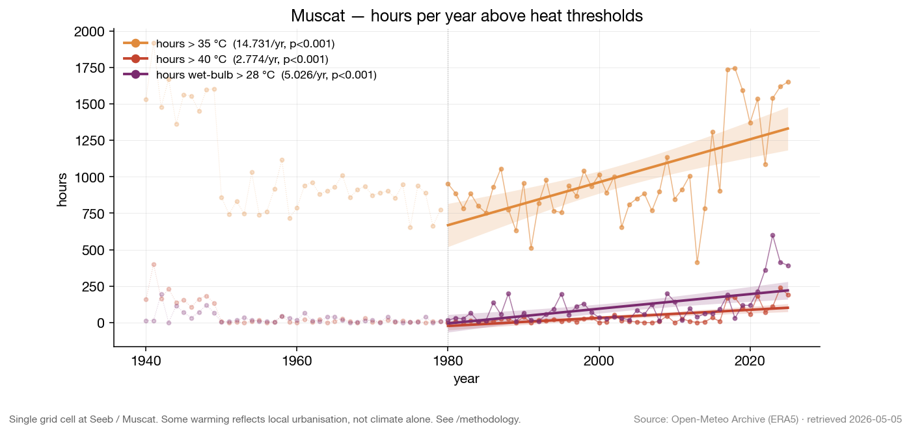
Hours per year above heat thresholds. Three series — temperature > 35 °C, > 40 °C, and wet-bulb > 28 °C — with OLS trend and 95 % CI band. Mann-Kendall p-values in the legend. Single Seeb / Muscat grid cell; some warming reflects urbanisation, not climate alone — see methodology.
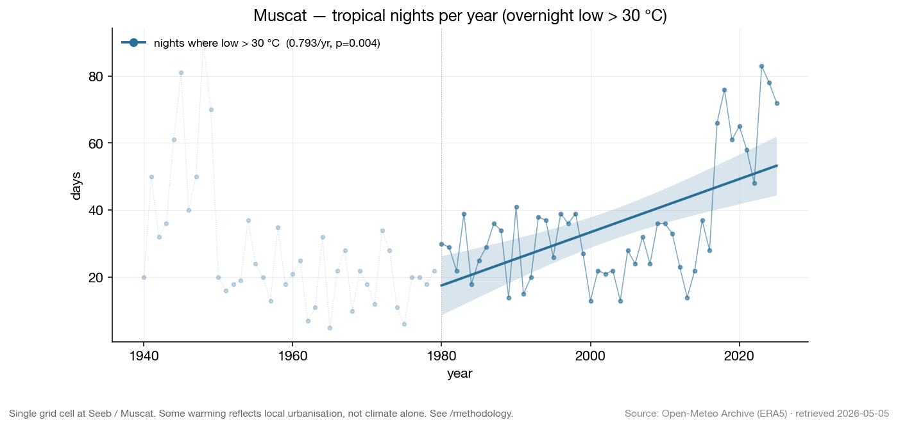
30°C nights per year. Days where the overnight low never dropped below 30 °C. The standard tropical-night threshold is >20 °C; in Muscat that is close to year-round, so this atlas tracks >30 °C lows as the heat-stress signal. Same UHI caveat applies.
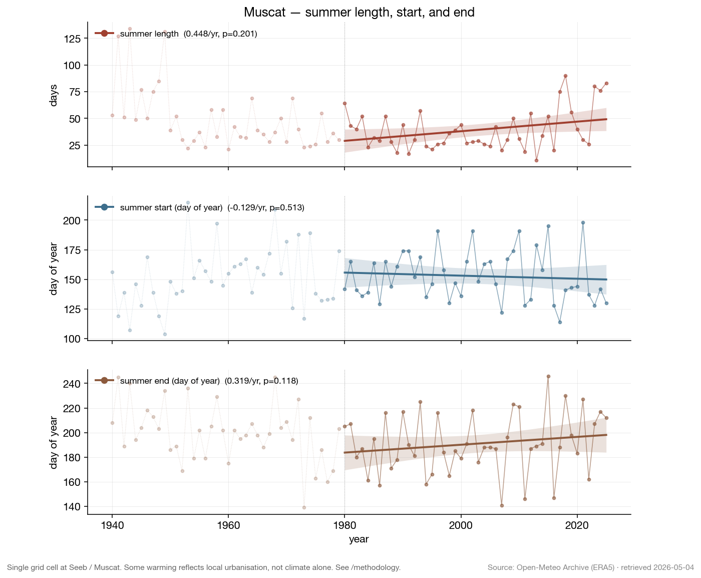
Summer length, start, and end. "Summer" defined as the longest run of consecutive days with peak > 35 °C. Start/end panels show the day-of-year of that run's first and last day. Same UHI caveat applies.
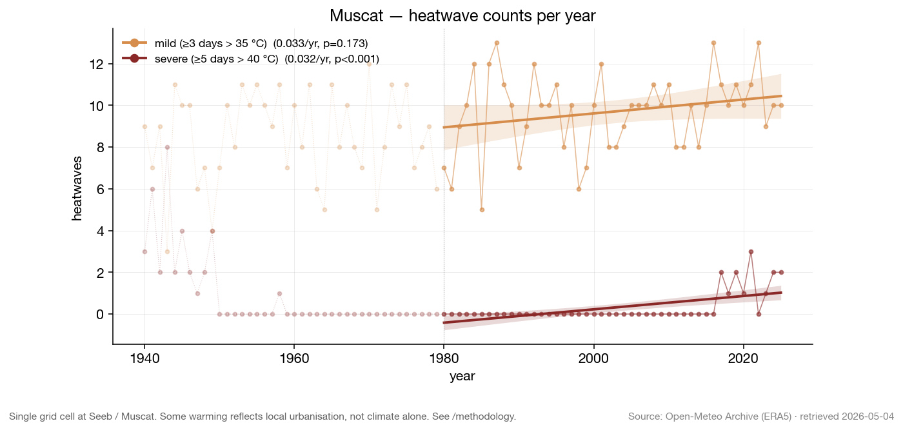
Heatwave counts per year. Mild = ≥3 consecutive days above 35 °C; severe = ≥5 consecutive days above 40 °C. Definitions live in the methodology page. Same UHI caveat applies.
Station Comparisons
ERA5/Open-Meteo annual summaries for Muscat, Salalah, Sohar, Sur, Nizwa, and Saiq. All station trends use the same post-1980 fit window and the same full-year filter.
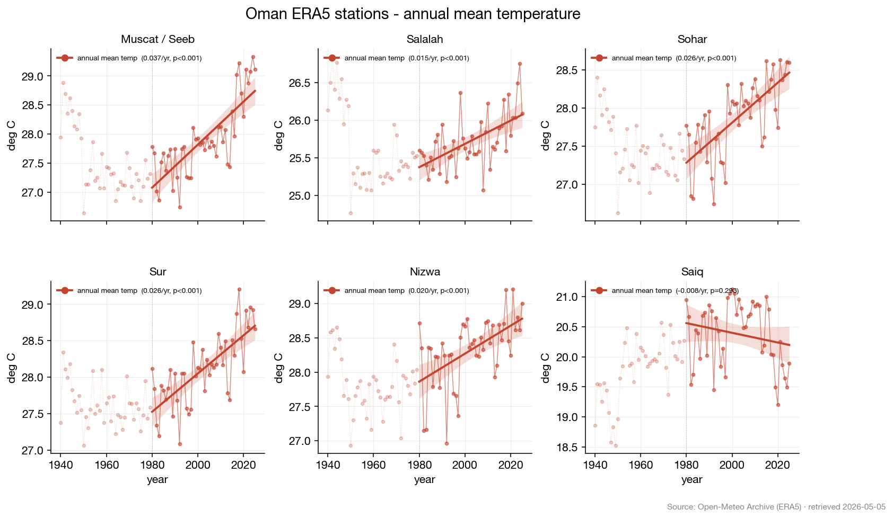
Annual mean temperature by station. Small multiples make coastal, interior, and mountain contexts comparable without treating one station as a perfect control for another.
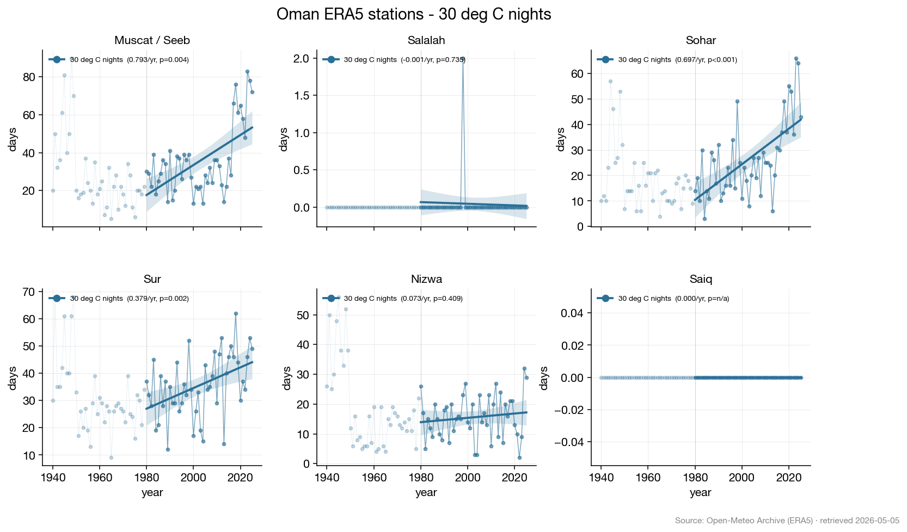
30°C nights by station. Days where the daily low stayed above 30 °C, faceted across the Phase 3 station catalog.
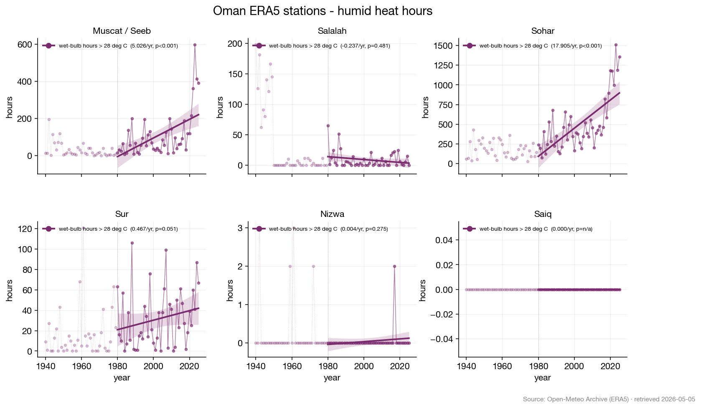
Wet-bulb hours by station. Humid-heat exposure is shown as annual hours where wet-bulb temperature exceeded 28 °C.
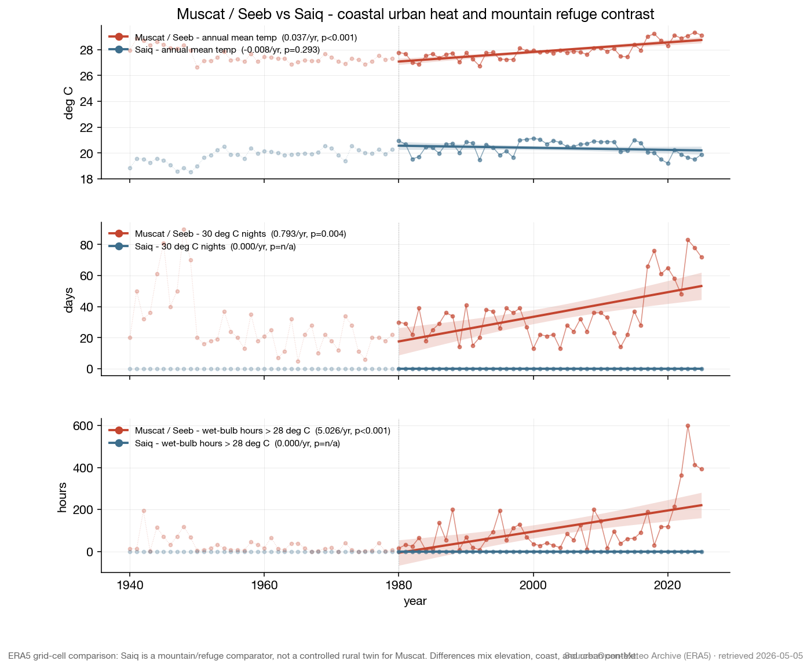
Muscat vs Saiq. Saiq is a mountain/refuge comparator, not a controlled rural twin for Muscat. Differences mix elevation, coast, and urban context.
Diagnostics
How we know the data is trustworthy where it claims to be, and where it isn't.
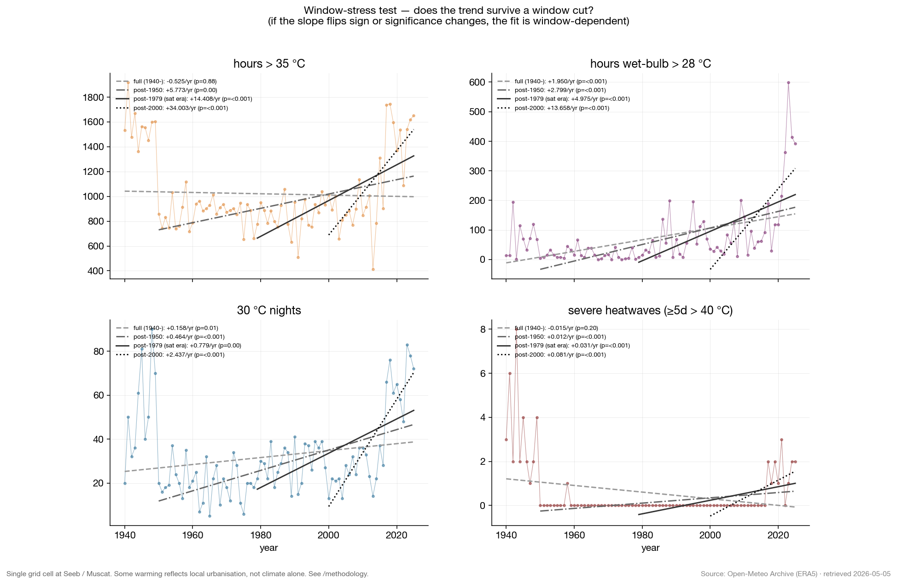
Window-stress test. For four key metrics, OLS trends are fitted on four nested windows (full / post-1950 / post-1979 / post-2000). Where the slope flips sign or significance changes between windows, the underlying fit depends on which decade you start counting from — a sign the early data is contaminating the trend.
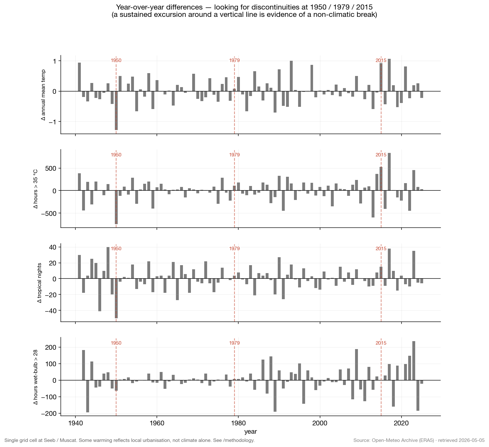
Year-over-year differences. Bars show Δ(year n − year n−1) for four core metrics. Vertical lines mark suspected reanalysis discontinuities at 1950, 1979, and 2015. The 1950 boundary shows the largest sustained excursions — consistent with ERA5's pre-satellite, pre-station-rich era.
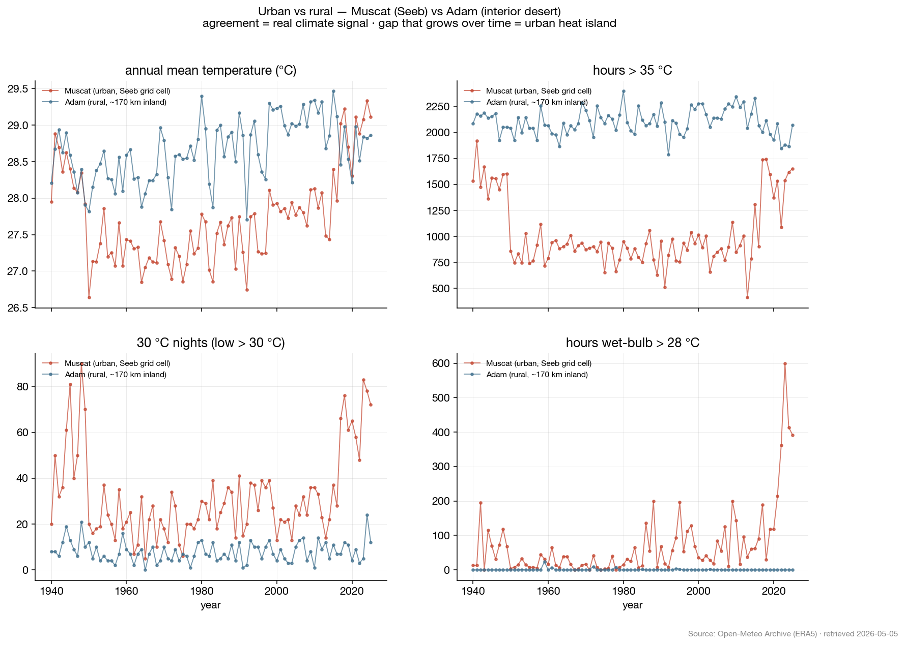
Urban vs rural — Muscat (coastal urban) vs Adam (interior desert, ≈170 km inland). Where the two series agree, the signal is regional climate. Where they diverge, it's local context. Both share the pre-1980 U-shape, confirming reanalysis instability rather than urban-heat-island as the dominant artifact. 30°C nights and wet-bulb hours are *only* a Muscat phenomenon (coastal humidity), not a regional one — these are the most defensible findings.